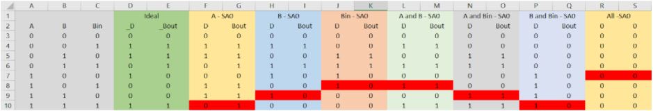
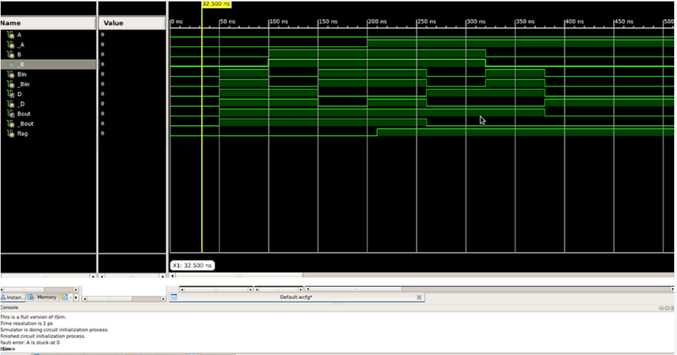
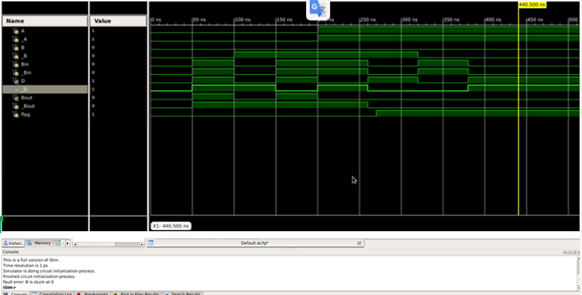
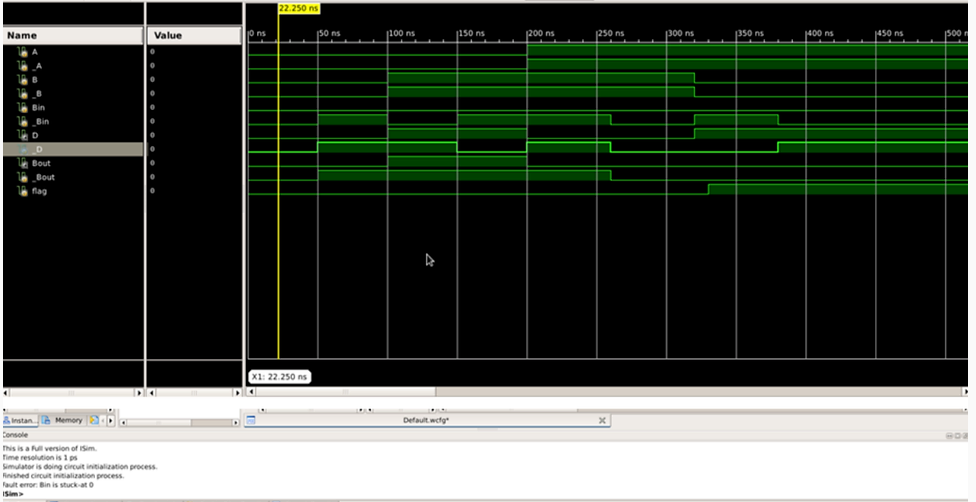
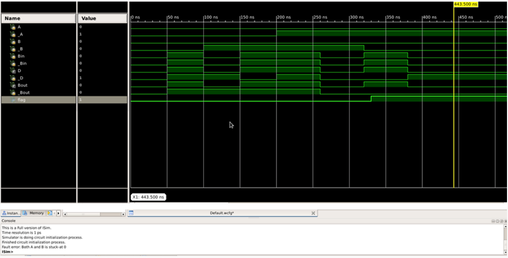
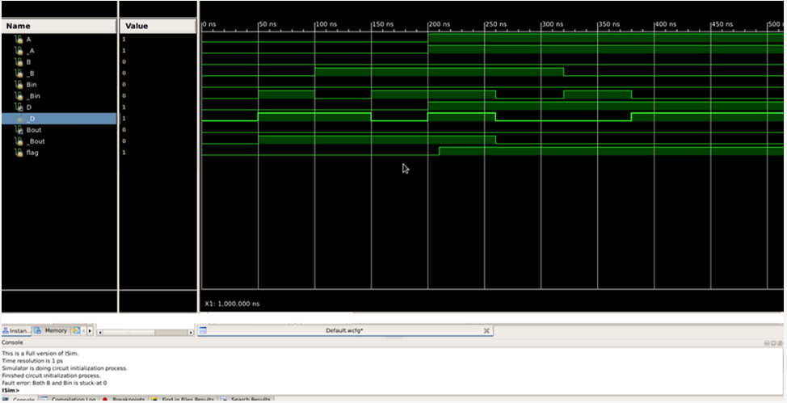
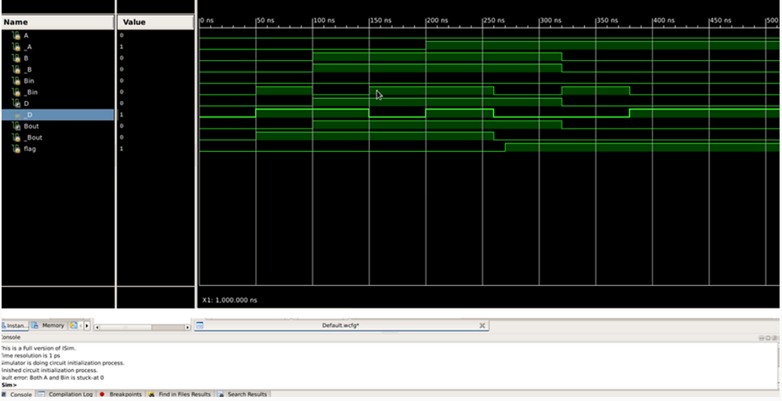
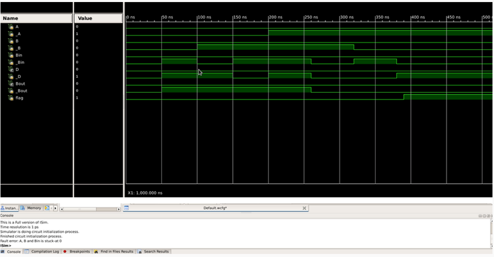
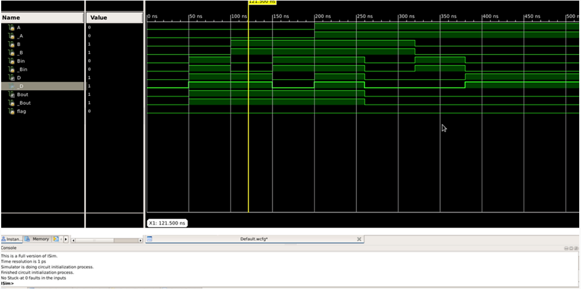

Aim
Theory
Procedure
Results
Team
Github
Aim
Theory
Procedure
Results
Team
Github
Results
Truth table to efficiently determine the faults:

A stuck-at 0

B stuck-at 0

Bin stuck-at 0

A & B stuck-at 0

B & Bin stuck-at 0

A & Bin stuck-at 0

All inputs stuck-at 0

No stuck-at 0 faults
